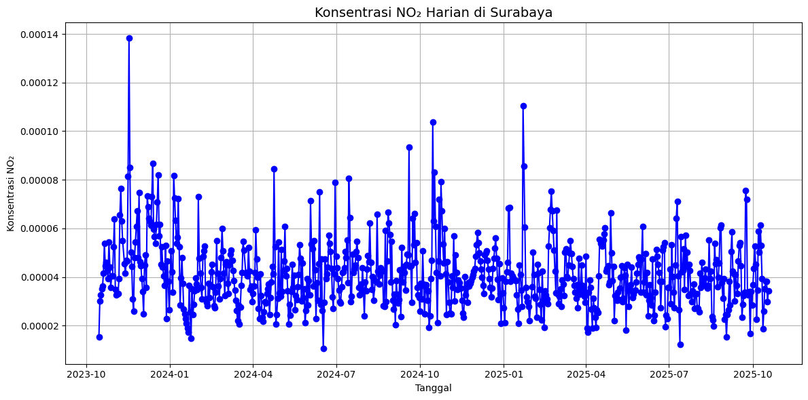
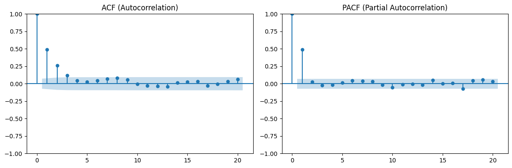
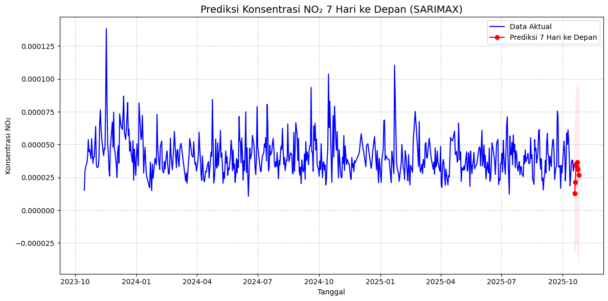

Prediksi NO2#
!pip install folium
Collecting folium
Downloading folium-0.20.0-py2.py3-none-any.whl.metadata (4.2 kB)
Collecting branca>=0.6.0 (from folium)
Downloading branca-0.8.2-py3-none-any.whl.metadata (1.7 kB)
Requirement already satisfied: jinja2>=2.9 in /workspaces/PSD/.venv/lib/python3.11/site-packages (from folium) (3.1.6)
Requirement already satisfied: numpy in /workspaces/PSD/.venv/lib/python3.11/site-packages (from folium) (1.26.4)
Requirement already satisfied: requests in /workspaces/PSD/.venv/lib/python3.11/site-packages (from folium) (2.32.5)
Collecting xyzservices (from folium)
Downloading xyzservices-2025.10.0-py3-none-any.whl.metadata (4.3 kB)
Requirement already satisfied: MarkupSafe>=2.0 in /workspaces/PSD/.venv/lib/python3.11/site-packages (from jinja2>=2.9->folium) (3.0.2)
Requirement already satisfied: charset_normalizer<4,>=2 in /workspaces/PSD/.venv/lib/python3.11/site-packages (from requests->folium) (3.4.3)
Requirement already satisfied: idna<4,>=2.5 in /workspaces/PSD/.venv/lib/python3.11/site-packages (from requests->folium) (3.10)
Requirement already satisfied: urllib3<3,>=1.21.1 in /workspaces/PSD/.venv/lib/python3.11/site-packages (from requests->folium) (2.5.0)
Requirement already satisfied: certifi>=2017.4.17 in /workspaces/PSD/.venv/lib/python3.11/site-packages (from requests->folium) (2025.8.3)
Downloading folium-0.20.0-py2.py3-none-any.whl (113 kB)
Downloading branca-0.8.2-py3-none-any.whl (26 kB)
Downloading xyzservices-2025.10.0-py3-none-any.whl (92 kB)
Installing collected packages: xyzservices, branca, folium
━━━━━━━━━━━━━━━━━━━━━━━━━━━━━━━━━━━━━━━━ 3/3 [folium]2m2/3 [folium]
Successfully installed branca-0.8.2 folium-0.20.0 xyzservices-2025.10.0
[notice] A new release of pip is available: 25.2 -> 25.3
[notice] To update, run: pip install --upgrade pip
import pandas as pd
import matplotlib.pyplot as plt
from statsmodels.tsa.arima.model import ARIMA
from datetime import timedelta
# Tambahkan library lain yang Anda gunakan di sini (misal: streamlit, folium)
print("--- Memulai Proses Pemuatan dan Pembersihan Data ---")
# --- 1. MEMUAT DATA ---
# Langsung muat file CSV Anda
file_name = 'NO2_surabaya_sidoarjo.csv'
try:
df = pd.read_csv(file_name)
print(f"Berhasil memuat {file_name}")
except FileNotFoundError:
print(f"ERROR: File {file_name} tidak ditemukan. Pastikan file ada di folder yang sama.")
# --- 2. PRA-PEMROSESAN (PERBAIKAN) ---
# Ini adalah bagian yang memperbaiki semua error Anda
# 2a. Ganti nama kolom 'time' menjadi 'Tanggal'
if 'time' in df.columns:
df.rename(columns={'time': 'Tanggal'}, inplace=True)
print("Berhasil mengganti nama kolom 'time' -> 'Tanggal'")
else:
print("Peringatan: Kolom 'time' tidak ditemukan (mungkin sudah diganti).")
# 2b. Konversi 'Tanggal' ke format datetime
if 'Tanggal' in df.columns:
df['Tanggal'] = pd.to_datetime(df['Tanggal'])
print("Berhasil mengonversi kolom 'Tanggal' ke datetime")
else:
print("ERROR: Kolom 'Tanggal' tidak ditemukan untuk dikonversi.")
# 2c. Mengisi nilai NO2 yang hilang (NaN)
# Berdasarkan data Anda, ada nilai yang hilang. Ini akan menyebabkan error pada model.
# Kita gunakan interpolasi linear untuk mengisinya.
initial_null_count = df['NO2'].isnull().sum()
if initial_null_count > 0:
df['NO2'] = df['NO2'].interpolate(method='linear')
print(f"Berhasil mengisi {initial_null_count} nilai NO2 yang hilang.")
# --- 3. VERIFIKASI ---
# Tampilkan hasil untuk memastikan semuanya benar
print("\n--- Data Final Siap untuk Model ---")
print(df.head())
print("\n--- Info Data Final ---")
df.info()
--- Memulai Proses Pemuatan dan Pembersihan Data ---
Berhasil memuat NO2_surabaya_sidoarjo.csv
Berhasil mengganti nama kolom 'time' -> 'Tanggal'
Berhasil mengonversi kolom 'Tanggal' ke datetime
Berhasil mengisi 114 nilai NO2 yang hilang.
--- Data Final Siap untuk Model ---
Tanggal NO2
0 2023-10-15 0.000015
1 2023-10-16 0.000030
2 2023-10-17 0.000033
3 2023-10-18 0.000035
4 2023-10-19 0.000036
--- Info Data Final ---
<class 'pandas.core.frame.DataFrame'>
RangeIndex: 729 entries, 0 to 728
Data columns (total 2 columns):
# Column Non-Null Count Dtype
--- ------ -------------- -----
0 Tanggal 729 non-null datetime64[ns]
1 NO2 729 non-null float64
dtypes: datetime64[ns](1), float64(1)
memory usage: 11.5 KB
import matplotlib.pyplot as plt
from statsmodels.graphics.tsaplots import plot_acf, plot_pacf
plt.figure(figsize=(12,6))
plt.plot(df['Tanggal'], df['NO2'], marker='o', linestyle='-', color='blue')
plt.title("Konsentrasi NO₂ Harian di Surabaya", fontsize=14)
plt.xlabel("Tanggal")
plt.ylabel("Konsentrasi NO₂")
plt.grid(True)
plt.tight_layout()
plt.show()
# Plot autokorelasi
fig, axes = plt.subplots(1, 2, figsize=(12,4))
plot_acf(df['NO2'], ax=axes[0], lags=20)
plot_pacf(df['NO2'], ax=axes[1], lags=20)
axes[0].set_title("ACF (Autocorrelation)")
axes[1].set_title("PACF (Partial Autocorrelation)")
plt.tight_layout()
plt.show()


from statsmodels.tsa.stattools import adfuller
result = adfuller(df['NO2'].dropna())
print("ADF Statistic:", result[0])
print("p-value:", result[1])
print("Critical Values:", result[4])
if result[1] > 0.05:
print("⚠️ Data tidak stasioner → perlu differencing.")
df['NO2_diff'] = df['NO2'].diff().dropna()
else:
print("✅ Data sudah stasioner.")
ADF Statistic: -15.77142689122453
p-value: 1.1597482449257049e-28
Critical Values: {'1%': -3.4393644334758475, '5%': -2.8655182850048306, '10%': -2.568888486973192}
✅ Data sudah stasioner.
from statsmodels.tsa.statespace.sarimax import SARIMAX
# Bangun model SARIMAX
model = SARIMAX(df['NO2'], order=(1,1,1), seasonal_order=(1,1,1,7))
results = model.fit(disp=False)
print(results.summary())
# Prediksi 7 hari ke depan
future_steps = 7
forecast = results.get_forecast(steps=future_steps)
pred_mean = forecast.predicted_mean
pred_ci = forecast.conf_int()
# Buat tanggal prediksi
last_date = df['Tanggal'].iloc[-1]
future_dates = [last_date + timedelta(days=i) for i in range(1, future_steps+1)]
pred_df = pd.DataFrame({
'Tanggal': future_dates,
'Prediksi_NO2': pred_mean.values,
'Lower_CI': pred_ci.iloc[:, 0].values,
'Upper_CI': pred_ci.iloc[:, 1].values
})
print(pred_df)
SARIMAX Results
=========================================================================================
Dep. Variable: NO2 No. Observations: 729
Model: SARIMAX(1, 1, 1)x(1, 1, 1, 7) Log Likelihood 6871.447
Date: Sun, 09 Nov 2025 AIC -13732.894
Time: 18:25:24 BIC -13709.990
Sample: 0 HQIC -13724.052
- 729
Covariance Type: opg
==============================================================================
coef std err z P>|z| [0.025 0.975]
------------------------------------------------------------------------------
ar.L1 0.2701 4.28e-20 6.31e+18 0.000 0.270 0.270
ma.L1 -0.6499 3.03e-20 -2.14e+19 0.000 -0.650 -0.650
ar.S.L7 -0.2209 7.57e-20 -2.92e+18 0.000 -0.221 -0.221
ma.S.L7 -0.5508 6.68e-20 -8.25e+18 0.000 -0.551 -0.551
sigma2 3.45e-10 8.64e-11 3.992 0.000 1.76e-10 5.14e-10
===================================================================================
Ljung-Box (L1) (Q): 16.01 Jarque-Bera (JB): 401.35
Prob(Q): 0.00 Prob(JB): 0.00
Heteroskedasticity (H): 0.73 Skew: 0.69
Prob(H) (two-sided): 0.01 Kurtosis: 6.38
===================================================================================
Warnings:
[1] Covariance matrix calculated using the outer product of gradients (complex-step).
[2] Covariance matrix is singular or near-singular, with condition number inf. Standard errors may be unstable.
Tanggal Prediksi_NO2 Lower_CI Upper_CI
0 2025-10-19 0.000013 -0.000033 0.000059
1 2025-10-20 0.000021 -0.000029 0.000072
2 2025-10-21 0.000035 -0.000020 0.000090
3 2025-10-22 0.000033 -0.000025 0.000091
4 2025-10-23 0.000037 -0.000024 0.000098
5 2025-10-24 0.000031 -0.000033 0.000095
6 2025-10-25 0.000027 -0.000040 0.000093
plt.figure(figsize=(12,6))
plt.plot(df['Tanggal'], df['NO2'], label='Data Aktual', color='blue')
plt.plot(pred_df['Tanggal'], pred_df['Prediksi_NO2'], color='red', marker='o', label='Prediksi 7 Hari ke Depan')
plt.fill_between(pred_df['Tanggal'], pred_df['Lower_CI'], pred_df['Upper_CI'], color='pink', alpha=0.3)
plt.title("Prediksi Konsentrasi NO₂ 7 Hari ke Depan (SARIMAX)", fontsize=14)
plt.xlabel("Tanggal")
plt.ylabel("Konsentrasi NO₂")
plt.legend()
plt.grid(True, linestyle='--', alpha=0.6)
plt.tight_layout()
plt.show()

import folium
# Koordinat Sidoarjo
lat, lon = -7.496, 112.72
# Nilai rata-rata prediksi
mean_pred = pred_df['Prediksi_NO2'].mean()
# Fungsi warna sesuai konsentrasi
def color_scale(val):
if val < 2.5e-5:
return 'green'
elif val < 5e-5:
return 'orange'
else:
return 'red'
m = folium.Map(location=[lat, lon], zoom_start=11)
folium.CircleMarker(
location=[lat, lon],
radius=15,
color=color_scale(mean_pred),
fill=True,
fill_opacity=0.6,
popup=f"Prediksi rata-rata NO₂ (7 hari): {mean_pred:.2e}"
).add_to(m)
m.save("map_no2.html")
m
Make this Notebook Trusted to load map: File -> Trust Notebook
# Cell 7: Generate app.py untuk Streamlit
# PERBAIKAN: Menambahkan encoding="utf-8" untuk menyimpan emoji
with open("app.py", "w", encoding="utf-8") as f:
f.write("""
import streamlit as st
import pandas as pd
import matplotlib.pyplot as plt
from statsmodels.tsa.statespace.sarimax import SARIMAX
from datetime import timedelta
import folium
from streamlit_folium import st_folium
st.title("🌫️ Prediksi Konsentrasi NO₂ Surabaya (7 Hari ke Depan)")
uploaded_file = st.file_uploader("Upload file CSV NO₂", type="csv")
if uploaded_file:
df = pd.read_csv(uploaded_file)
# Perbaikan bug jika file CSV memiliki header aneh
if df.columns[0] == "Tanggal,NO2":
# Reset file pointer dan baca ulang
uploaded_file.seek(0)
df = pd.read_csv(uploaded_file, names=["Tanggal", "NO2"], skiprows=1)
# Perbaikan dari error Anda sebelumnya (time vs Tanggal)
if 'time' in df.columns:
df.rename(columns={'time': 'Tanggal'}, inplace=True)
df['Tanggal'] = pd.to_datetime(df['Tanggal'])
df['NO2'] = pd.to_numeric(df['NO2'], errors='coerce')
# Mengisi nilai hilang (penting untuk model)
df['NO2'] = df['NO2'].interpolate(method='linear')
df = df.dropna(subset=['Tanggal','NO2']).sort_values('Tanggal')
st.line_chart(df.set_index('Tanggal')['NO2'])
model = SARIMAX(df['NO2'], order=(1,1,1), seasonal_order=(1,1,1,7))
results = model.fit(disp=False)
forecast = results.get_forecast(steps=7)
pred_mean = forecast.predicted_mean
future_dates = [df['Tanggal'].iloc[-1] + timedelta(days=i) for i in range(1,8)]
pred_df = pd.DataFrame({'Tanggal': future_dates, 'Prediksi_NO2': pred_mean.values})
st.subheader("📅 Prediksi 7 Hari ke Depan")
st.dataframe(pred_df)
plt.figure(figsize=(10,5))
plt.plot(df.set_index('Tanggal')['NO2'], label='Aktual', color='blue')
plt.plot(pred_df.set_index('Tanggal')['Prediksi_NO2'], color='red', marker='o', label='Prediksi')
plt.legend()
st.pyplot(plt)
lat, lon = -7.2575, 112.7521
m = folium.Map(location=[lat, lon], zoom_start=11)
mean_pred = pred_df['Prediksi_NO2'].mean()
folium.CircleMarker([lat, lon], radius=15, color='red', fill=True,
popup=f"Prediksi rata-rata NO₂: {mean_pred:.2e}").add_to(m)
st_folium(m, width=700)
""")
print("✅ File app.py (UTF-8) siap dijalankan di Streamlit!")
✅ File app.py (UTF-8) siap dijalankan di Streamlit!